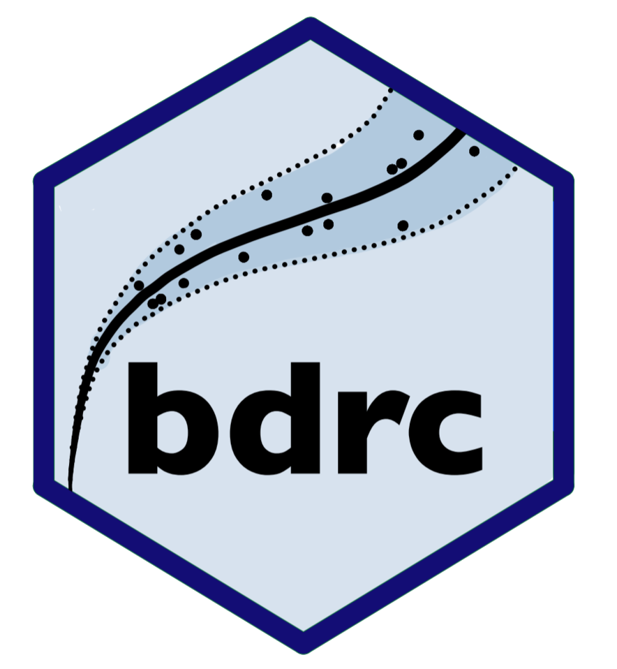

bdrc - Bayesian Discharge Rating Curves 
The bdrc package provides tools for fitting discharge rating curves using Bayesian hierarchical models. It implements both traditional power-law and novel generalized power-law models, offering flexibility in handling various hydrological scenarios.
This package implements four models as described in Hrafnkelsson et al. (2022):
Installation
# Install release version from CRAN
install.packages("bdrc")
# Install development version from GitHub
devtools::install_github("sor16/bdrc")Key-features
- Easy-to-use interface for fitting Bayesian discharge rating curves
- Multiple model options to suit different hydrological scenarios
- Built-in visualization tools for model results and diagnostics
- Integrates R and C++ for efficient MCMC sampling using parallel processing
Getting started
For a deeper dive into the package functionality and visualization options, or the theory behind the models, check out our vignettes:
References
Hrafnkelsson, B., Sigurdarson, H., Rögnvaldsson, S., Jansson, A. Ö., Vias, R. D., and Gardarsson, S. M. (2022). Generalization of the power-law rating curve using hydrodynamic theory and Bayesian hierarchical modeling, Environmetrics, 33(2):e2711. doi: https://doi.org/10.1002/env.2711